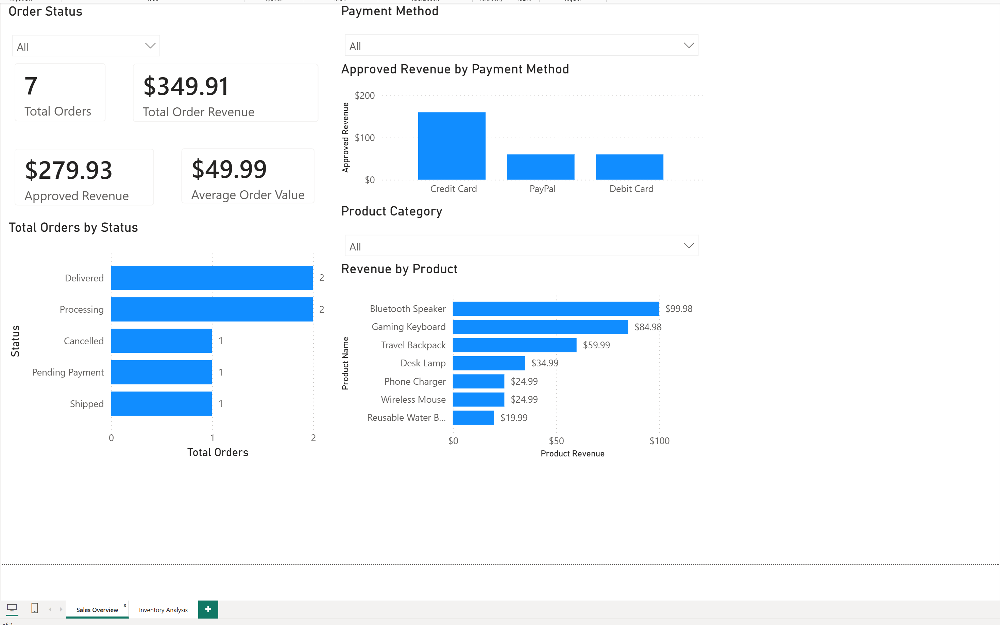
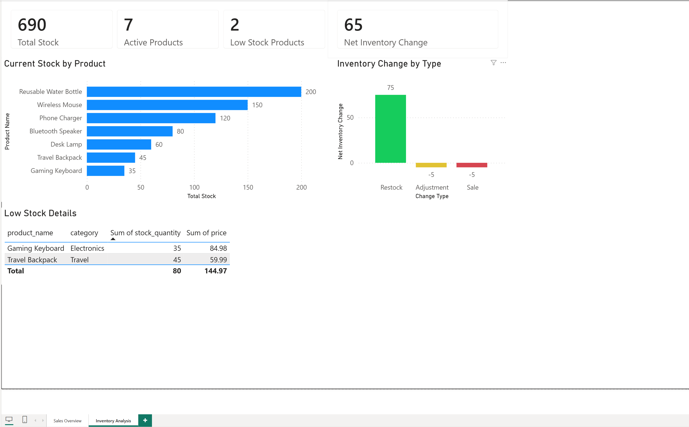

SQL & Power BI.
Turning structured information into useful decisions.
A self-designed sales database and business intelligence case study, with a six-table MySQL schema, 15 verified SQL analyses and a two-page Power BI report.

Context matters.
I modeled customers, products, orders, order items, payments and inventory activity, used SQL to analyze their relationships, and created sales and inventory visuals for a business audience.
The database uses sanitized sample data. The charts demonstrate a reporting workflow, not actual production business results.
What I did.
Data modeling
Create a relational schema with keys and reproducible sanitized sample data.
SQL verification
Use joins, aggregations, filters, grouping and subqueries to answer business questions.
Visual reporting
Build sales and inventory views using Power BI, Power Query and DAX.
How I tested it.
Design and populate the six-table schema
Run and verify analytical SQL queries
Build sales and inventory measures
Publish readable visual insights
Inspect the work.
These are authentic project artifacts and source links, not illustrative sample reports.


What it shows.
This shows practical database design, querying, output verification and translating technical results into visual information.